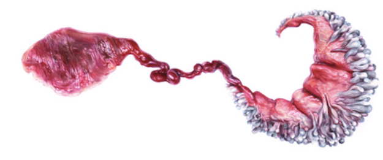

Je blindedarm upgraden en breien met vlees: kom op Artfest meedromen over de toekomst
Een aantal veelbelovende vondsten kun je de komende maanden al bekijken in het Stedelijk Museum
Amsterdam. Een wandkleed van cocktailprikkers, een energie-opwekkend glas-in-loodraam, vlees uit het
laboratorium: je ziet het op de tentoonstelling Dream Out Loud. Opvallend veel kunstenaars en ontwerpers
gebruikten er afgedankte materialen als grondstof voor nieuwe, hoogwaardige producten. Zo zijn er sieraden
van samengeperst fijnstof, een stoel van oude cd’s, spiegels van chemisch afval en een huis gemaakt van
plantaardig restmateriaal.
Onrealistische toekomstdromen? Niet allemaal. Het daadwerkelijk uitvoeren van deze futuristische fantasieën
is dichterbij dan je misschien denkt.
Hoe dichtbij, dat bespreken we tijdens een nieuwe editie van Artfest. Die vindt dus plaats in het Stedelijk,
tijdens de Museumnacht, een nacht waarop ruim vijftig Amsterdamse musea tot in de late uurtjes open blijven.
Tijdens de talkshow gaan we in gesprek met de makers van de twee projecten die ons het meest fascineerden:
Agatha Haines en Jesse Howard.
Tijd: 20.00 uur.
Locatie: Entreehal Stedelijk Museum Amsterdam
TENTOONSTELLING DREAM OUT LOUD.
Stedelijk Museum Amsterdam / 26 aug 2016 - 1 jan 2017
Je hart upgraden: kan dat?
Agatha Haines volgt de ontwikkelingen rondom het ‘bioprinten’ van organen op de voet. Is het mogelijk, en
wenselijk, om extra eigenschappen aan deze nieuwe organen toe te voegen? Door deze toekomstscenario’s in
haar werk Circumventive Organs heel realistisch te visualiseren, geeft Haines de aanzet voor een interessant
debat over vooruitgang en ethiek.
AGI (AGATHA) HAINES
Niet alleen wil Agi Haines menselijke organen dupliceren door ze te bioprinten maar ook nieuw ontworpen,
verbeterde organen produceren. “Haines’ ontwerpen zijn speculatief: ze gebruikt haar verbeeldingskracht om
toekomstscenario’s zichtbaar en tastbaar te maken.”

Illustratie van een ‘electro stabilis cardium’-orgaan door kunstenares Beatrice Haines
Broodrooster: toch maar repareren?
Het project Transparent Tools van Jesse Howard biedt een oplossing voor een frustrerend probleem van onze
tijd. Als een apparaat kapot gaat, is het bijna altijd goedkoper om een nieuw exemplaar te kopen dan om het
te laten repareren – hoe klein het mankement ook is. Zou het niet veel fijner en duurzamer zijn wanneer
consumenten zelf hun broodrooster of waterkoker in elkaar kunnen zetten? Howard ontwierp verschillende
huishoudelijke apparaten die je zelf, met makkelijk verkrijgbare spullen en een vrij verkrijgbare
handleiding, in elkaar kunt zetten. Gaat dat ons minder afhakelijk maken van grote fabrikanten?
JESSE HOWARD
Jesse Howard geeft met zijn ontwerpfilosofie de controle over de productie van alledaagse huishoudelijke
apparatuur aan de consument terug. Jesse Howard (Denver, 1978) benadrukt in zijn werk het belang van open
design. Hij ontleedt bestaande huishoudelijke gebruiksvoorwerpen en apparaten, ontwerpt vervolgens zijn
eigen versie en maakt zijn technische tekeningen en de bronnen van de verschillende onderdelen vrij
toegankelijk via online platforms.
“Howard ontwikkelde zijn ontwerpfilosofie tijdens zijn studie aan het DesignLab van de Gerrit
Rietveld Academie.”
Maar kan kunst wel echt verschil maken?
Ten slotte spreken we Lennart Booij, conservator toegepaste kunst en vormgeving bij het Stedelijk en
samensteller van Dream Out Loud. Wat wil hij vertellen met de tentoonstelling?
En in hoeverre denkt hij dat de ideeën van deze kunstenaars echt een verschil kunen maken? Verder hebben we
zoals altijd een quiz en kun je blijven hangen voor de afterparty. Hopelijk tot dan! Terugkijken op Artfest:
talkshow over kunst en natuur.
Afgelopen donderdag presenteerde ik met collega Ernst-Jan Pfauth Artfest: De Natuureditie. Want hoe
beïnvloeden kunst en natuur elkaar? De VPRO filmde de hele avond, zodat je die ook hier kunt terugkijken.